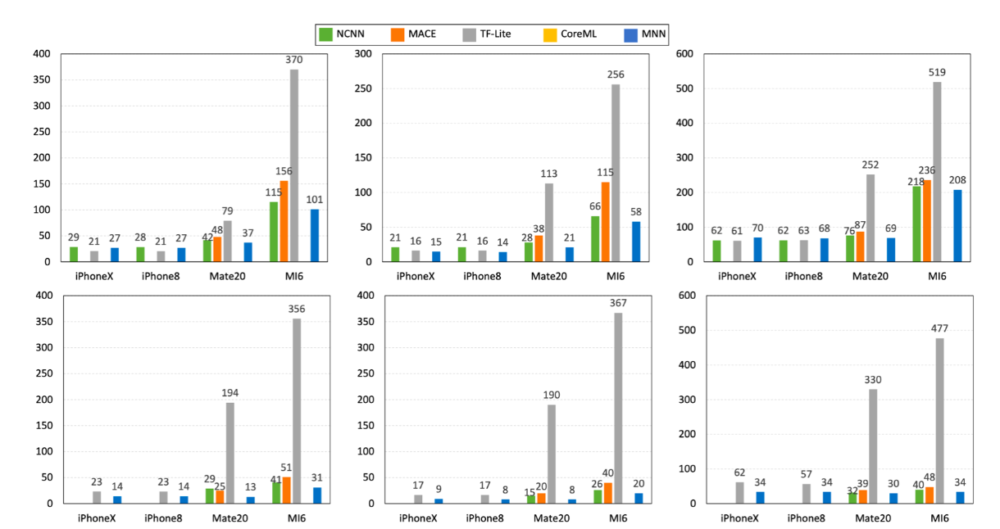
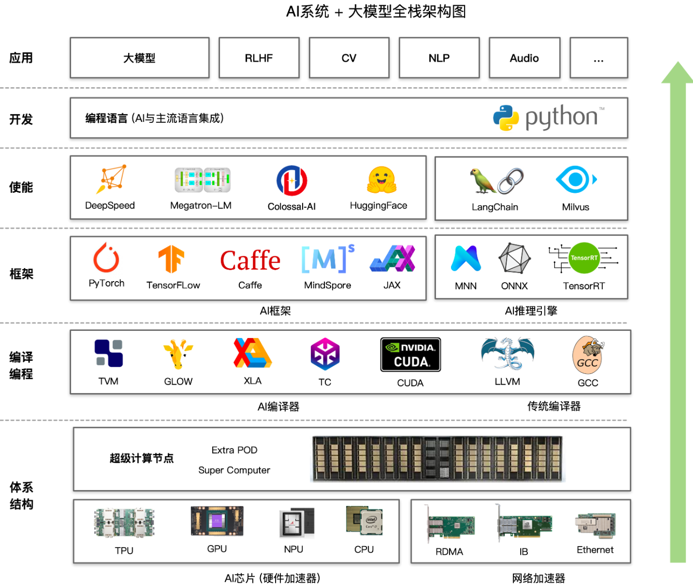
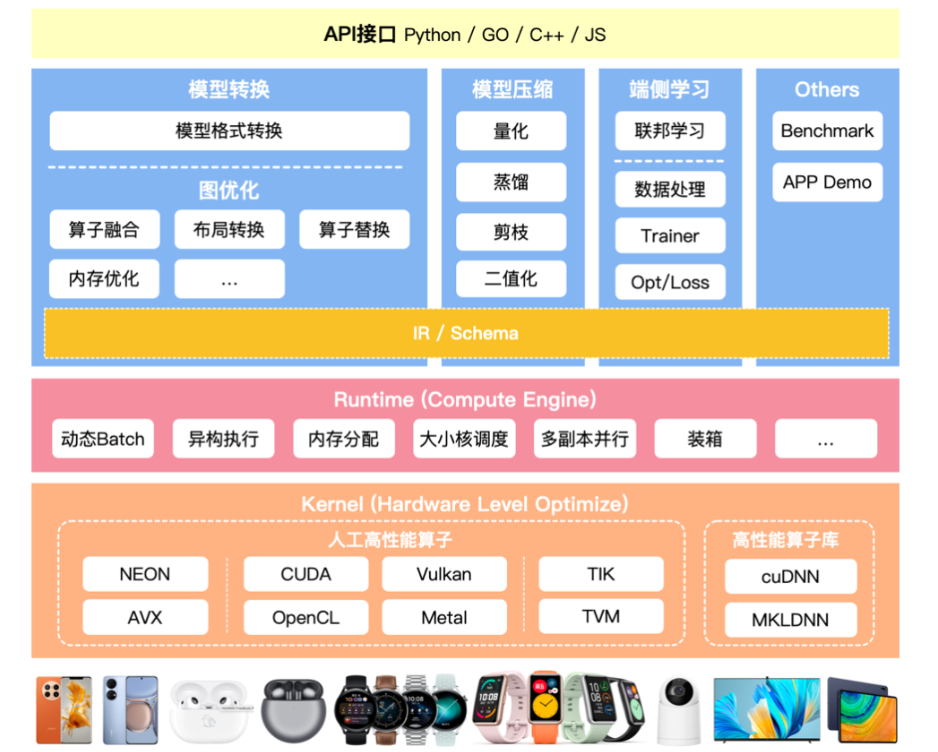
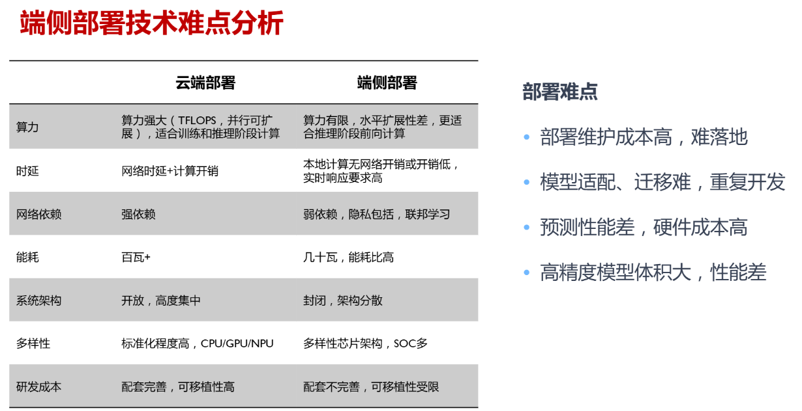

Reference
Reference
- Here are some items related to TinyML OpenSource FrameWork:
| Item | Type | Lang | Company | Platform | Targets | Main Func | Main Opt |
|---|---|---|---|---|---|---|---|
| TinyMaix | Infer | C | Sipeed | MCU | SSE NEON CSKYV2 RV32P | Inline Asm, | |
| CMSIS-NN | |||||||
| TinyEngine | Infer | C | MCU | ||||
| ORT | Infer | C++ | Microsoft | PC, Server | SSE AVX NEON CUDA | Inline Asm, | |
| microTVM | Infer | C++ | Apache | Paper | |||
| TFLM | Infer | C++ | MCU Arm(Cortex-M), Hexagon, RISC-V, Xtensa | ??? | ??? | ??? | |
| NCNN | Infer | C/C++ | Tencent | Phone | |||
| CoreML | Train & Infer | Swift | Apple | IPhone Arm(Cortex-M) | Metal | ??? | ??? |
| MNN | Train & Infer | C++ | Alibaba | Phone Arm(Cortex-M/A) | SSE AVX NEON Metal HIAI OpenCL Vulkan CUDA Metal | Convert, Compress, Express, Train, CV | Inline Asm, Winograd Conv, FP16 |
| MindSpore | Train & Infer | C++/Python | HuaWei? | All? |
性能：

1 主流引擎架构
大模型全栈架构图：

推理引擎架构：

2 TinyML的推理引擎
端侧部署：

AI部署平台细分：
| PlatformLevel | AI-Box | AI-Camera | AIoT | TinyML |
|---|---|---|---|---|
| Storage Media | eMMC/SSD | eMMC/Nand/Nor | Nor/SIP Flash | Nor/SIP Flash |
| Storage Size | >=8GB | 16MB~8GB | 1~16MB | 16KB~16MB |
| Memory Media | DDR4 | mostly DDR3 | SRAM/PSRAM | SRAM/PSRAM |
| Memory Size | >=2GB | 64MB~2GB | 0.5~64MB | 2KB~8MB |
| CPU Freq | >=1.5G | 0.5~1.5G | 100~500M | 16~500M |
| Computing Power | >=2TOPS | 0.2~1TOPS | 50~200GOPS | <1GOPS |
| Deploy Language | python/c++ | python/c++ | mpy/C | mostly C |
| Typical Device | JetsonNano | RV1109 IPC | BL808/K210 | ESP32/BL618 |
| Typical Board Price | >$100 | $20~$100 | $5~$20 | <$5 |
| Typical Chip Price | >$10 | $4~$10 | $2~$5 | $1~$3 |
兼容性与性能之间平衡：
1. 读入模型支持.onnx来提升框架兼容性，将读入后的模型压缩为自定义的运行时模型，降低运行时内存开销（使用flatbuffer）；
2. 动态静态图优化：主要性能瓶颈在于运行时内存与数据IO，对于TinyML的场景需要做专项的量化、调度方案；
3. 异构执行与内联汇编：选取热点算子进行内联汇编优化，支持硬件汇编指令，提升推理速度；
4. 计算加载与卸载：需要搭建模型数据库，针对模型选取推理网络类型（边缘独立推理、边缘集群推理、云边协同推理），在指定网络下，尽量降低推理时延和内存占用；
3 部署实验
3.1 实验环境
- 实验环境：PC端（Linux + x86_64）、MCU端（PynqZ2 + Arm）
- 实验目标：测试各个推理引擎（主要：
TinyMaix,TFLM,ORT,microTVM）在边缘侧推理的指标 - 实验指标：性能（内存占用，推理时间）、易用性（评估部署时间）、兼容性（多平台部署）
- 实验数据：收集常用DL模型（格式：
.onnx,.tflite）、MLPerf测试
| Pynq-Z2 | PC | |
|---|---|---|
| CPU | ARM Cortex A9 |
3.2 TFLM
TFLM(TensorFlow Lite for Microcontrollers)自称其运行时（runtime）在 Cortex M3 上仅需 16KB，可以直接在“裸机”上运行，不需要操作系统支持。
参考：
3.2.1 构建
TFLM 使用 Bazel 构筑工具（Google的构筑工具，基于JRM的，较难用）
- 在Bazel仓库去选择适合版本下载，这里是x86_64：
Bazel 中的配置文件：
WORKSPACE：含有该文件的目录将会被视为根目录BUILD：含有该构建规则文件的目录被视为项目的一个模块
- 构筑 TFLM
git clone https://github.com/tensorflow/tflite-micro.git
cd tflite-micro
# 查看构建规则
cat BUILD
# 构筑 micro 工具链：无效
bazel build
# 这个管用
make -f tensorflow/lite/micro/tools/make/Makefile TARGET=linux TARGET_ARCH=x86_64 microlite
3.2.2 示例
在qemu进行模拟测试：
3.2.x 综合评估
3.3 TinyEngine
TinyEngine
3.3.1 构建
git clone --recursive https://github.com/mit-han-lab/tinyengine.git
conda create -n tinyengine python=3.6 pip
conda activate tinyengine
cd tinyengine
pip install -r requirements.txt
3.3.2 示例
3.4 TinyMaix
3.4.1 构建
3.4.2 示例
3.4.x 综合评估
| model | cifar10 | total |
|---|---|---|
| Mem | ||
| Time | ||
| Deploy | easy |
3.5 CMSIS-NN
参考：